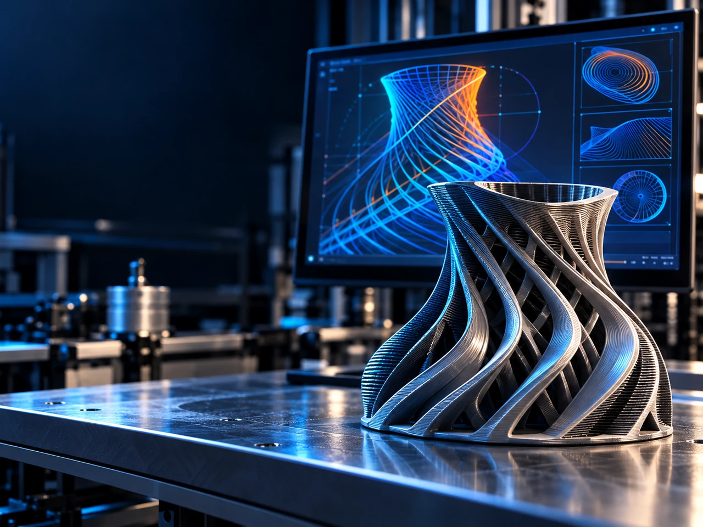

Génération paramétrique
Créer des familles de trajectoires réutilisables à partir de paramètres géométriques et procédé explicites.
Générer le mouvement de fabrication à partir de l’intention procédé plutôt que de dépendre uniquement du tranchage planaire conventionnel.
MYCNC3D développe des méthodes expérimentales de génération de trajectoires et de mouvements adaptées aux procédés FDM non conventionnels, notamment la géométrie de dépôt variable, les trajectoires non planaires et l’adaptation de la vitesse au débit matière.

Présentation du projet
Plusieurs familles de trajectoires générées ont été imprimées et évaluées physiquement.
MYCNC3D développe des méthodes expérimentales permettant de générer des trajectoires de fabrication additive directement à partir de paramètres géométriques et procédé. Les travaux portent notamment sur la génération paramétrique, la géométrie de dépôt variable, les trajectoires non planaires, l’ordonnancement des parcours, la continuité des mouvements, le post-traitement spécifique aux machines et l’adaptation de la vitesse au débit matière.
Une trajectoire géométriquement correcte n’est pas automatiquement une trajectoire de fabrication fiable. La demande d’extrusion, les accélérations, les intersections, la géométrie locale du cordon, la continuité et les contraintes machine doivent être prises en compte lors de la génération.
Les recherches actuelles visent à transformer les méthodes validées sur des géométries spécifiques en composants de génération de trajectoires paramétriques et réutilisables.
Pourquoi cet axe est important
Une trajectoire géométriquement valide n’est pas automatiquement une bonne trajectoire de fabrication. Débit, accélérations, géométrie du cordon, intersections, continuité et cinématique machine influencent directement son exécution.
La génération de trajectoires doit donc relier la géométrie aux limites physiques du procédé.
Axes de travail actuels
Créer des familles de trajectoires réutilisables à partir de paramètres géométriques et procédé explicites.
Contrôler localement largeur, hauteur ou forme du cordon.
Adapter la vitesse machine à la demande locale d’extrusion et aux limites de débit volumique.
Générer des parcours courbes ou inclinés au-delà des hypothèses de couches planes.
Réduire déplacements inutiles, intersections et discontinuités.
Transformer une intention de fabrication générique en commandes compatibles avec la cinématique et la commande de la machine cible.
Approche d’ingénierie
Les trajectoires expérimentales sont générées, inspectées puis validées physiquement lorsque cela est possible. Le résultat imprimé sert à affiner les règles géométriques, les paramètres procédé et l’ordonnancement.
État actuel
Plusieurs familles de trajectoires générées ont été imprimées et évaluées physiquement. L’objectif actuel est de transformer les méthodes validées en composants réutilisables de génération de trajectoires.
Prochain jalon
Le prochain jalon consiste à généraliser la génération de trajectoires à des familles de géométries tout en prenant systématiquement en compte le débit d’extrusion, la vitesse, les accélérations, la continuité, les intersections et les contraintes machine.
Le passage vers EN DÉVELOPPEMENT sera atteint lorsque la même logique de génération pourra être paramétrée et réutilisée sans devoir être réécrite pour chaque géométrie d’essai.
Plateforme intégrée
La génération avancée de trajectoires constitue le pont logiciel entre géométrie, mouvement multi-axes et capacité d’extrusion. C’est à ce niveau que les contraintes machine et les objectifs procédé sont transformés en mouvements exécutables.
Collaboration
MYCNC3D est ouvert aux collaborations avec des développeurs logiciels, spécialistes FAO, chercheurs et fabricants de machines travaillant sur les trajectoires additives avancées ou les logiciels de fabrication tenant compte de la machine.